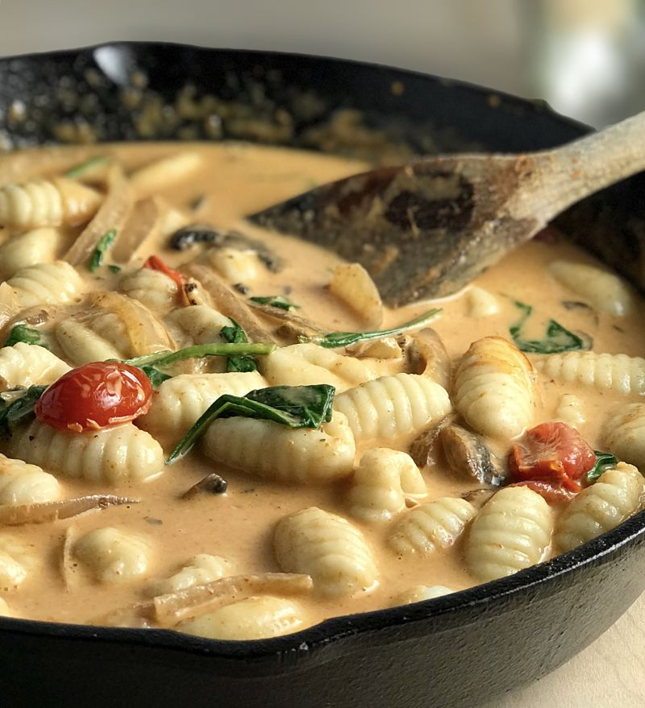

Gnocchi Al Curry

Description
Tasty and Fresh Gnocchi Recipe
Ingredients:
- 400g of Shrimps
- 450g of Gnocchi
- 250g of Cherry Tomatoes
- 2x Garlic Cloves
- 1x Large Onion
- 1x Carrot
- 1x Lime
- 1x Can of Coconut Milk
- Coriander q.b
- Ginger q.b
- Curry q.b
Steps:
-
Peel the shrimps. Reserve the peeled shrimps in a bowl and squeeze half a lime into the bowl.
Sauce
-
In a frying pan add margarine and olive oil, add the peeled shrimp heads and sauté. Smash the heads with a spatula to release the flavor
After 2-3 minutes, remove the heads and add the chopped onion, two chopped garlic cloves, two slices of ginger, curry and let it cook for 2-3 minutes, then add the cherry tomatoes, when they start to soften, crush the tomatoes with a spatula and add the coconut milk
continue to stir for another couple of minutes. As soon the mixture is ready, add it to a blender and grind everything until you get a consistent sauce. Reserve the sauce.
Gnocchi
- In a frying pan, add olive oil and margarine q.b. add the gnocchi, slices of carrot, one lime zest and sauté for a couple of minutes (10+ min). After being sautéed, add the sauce obtained previously, add the shrimps and cook for another 5 minutes.
- Before serving, add coriander qb.